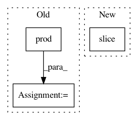

cbbcea8795e8da754a5b3ffb1a08ef66afd84eef,dask_image/ndmeasure/_utils.py,,_ravel_shape_indices,#Any#Any#Any#,54
Before Change
indices = list(indices)
for i in _pycompat.irange(len(indices)):
indices[i] *= dtype.type(numpy.prod(indices[i].shape[i + 1:]))
indices = dask.array.stack(indices).sum(axis=0)
return indices
After Change
dask.array.arange(
0, numpy.prod(dimensions[i:]), numpy.prod(dimensions[i + 1:]),
dtype=dtype, chunks=c
)[i * (None,) + (slice(None),) + (len(dimensions) - i - 1) * (None,)]
for i, c in enumerate(chunks)
])
In pattern: SUPERPATTERN
Frequency: 3
Non-data size: 3
Instances
Project Name: dask/dask-image
Commit Name: cbbcea8795e8da754a5b3ffb1a08ef66afd84eef
Time: 2018-09-02
Author: jakirkham@gmail.com
File Name: dask_image/ndmeasure/_utils.py
Class Name:
Method Name: _ravel_shape_indices
Project Name: stanford-mast/nn_dataflow
Commit Name: 22fb2fe9ea4ad5ef536709aa07838d3d6c7357ee
Time: 2017-05-26
Author: mgao12@stanford.edu
File Name: nn_dataflow/LoopBlockingScheme.py
Class Name: LoopBlockingScheme
Method Name: _set_unit_cnt
Project Name: stanford-mast/nn_dataflow
Commit Name: a1c8c7eb8e161adcd444d44d44ec54ba17343a34
Time: 2017-06-28
Author: mgao12@stanford.edu
File Name: nn_dataflow/LoopBlockingScheme.py
Class Name: LoopBlockingScheme
Method Name: _set_unit_cnt